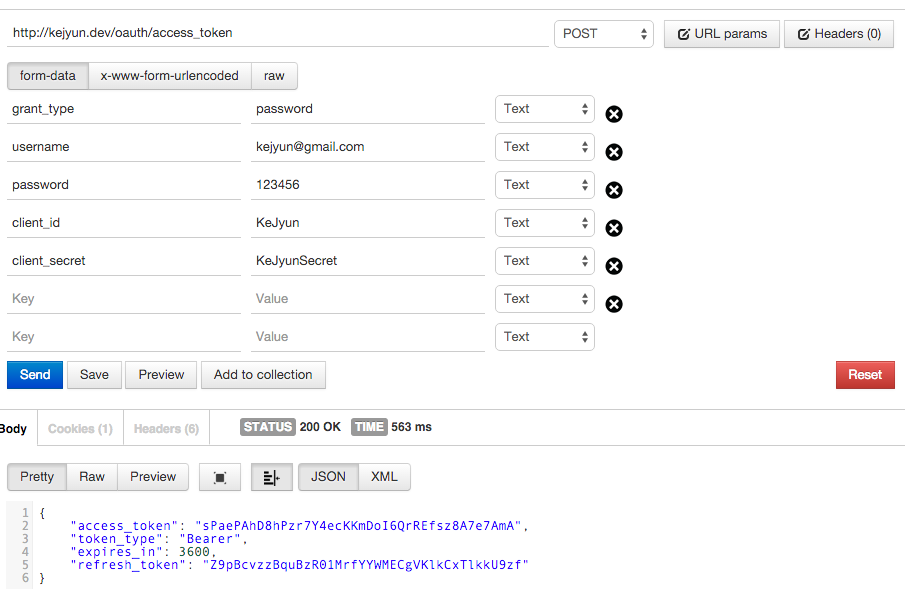

OAuth2 Refresh Token
設定 config
在 config/oauth2.php 檔案中加入下列設定，並設定你的 token 存活時間(access_token_ttl) 及 refresh token 存活時間(refresh_token_ttl) 單位時間為秒
注意，若使用 Refresh Token 時，必須至少有
Password Grant或Auth Code Grant的這兩種 OAuth2 驗證方法其中一種，然後在取得 Access token 時，會一併回傳 refresh token
return [
'grant_types' => [
'refresh_token' => [
'class' => '\League\OAuth2\Server\Grant\RefreshTokenGrant',
'access_token_ttl' => 3600,
'refresh_token_ttl' => 36000
]
]
];
使用 Password Grant 取得 Access token 及 Refresh Token
在我們取得 Access token 的資料欄位中填入下列欄位
| 欄位名稱 | 資料 |
|---|---|
| grant_types | password |
| username | kejyun@gmail.com |
| password | 123456 |
| client_id | KeJyun |
| client_secret | KeJyunSecret |
client_id與client_secret為在 OAuth 套件說明頁 建立的
username與password是你專案的使用者驗證資料，端看你驗證的callback如何定義這兩個欄位的資料，驗證成功後回傳使用者的編號給 OAuth2 記錄即可

送出到我們設定的 /oauth/access_token 路由後，我們就可以直接取得 access_token，並回傳此 token 失效的時間 expires_in 為我們設定的 access_token_ttl，還有 refresh_token 可以讓我們直接更新取得新的可用 token
使用 Refresh Token 取得的新的 Access token 權限與先前的 Access token 會完全相同
透過 Refresh Token 取得新的 Access Token
在我們取得 Access token 的資料欄位中填入下列欄位
| 欄位名稱 | 資料 |
|---|---|
| grant_types | refresh_token |
| refresh_token | Z9pBcvzzBquBzR01MrfYYWMECgVKlkCxTlkkU9zf |
| client_id | KeJyun |
| client_secret | KeJyunSecret |

這樣我們就可以直接透過 Refresh Token 取得新的可使用者 Access Token，而不用再透過使用者帳號密碼去取得可使用的 Access Token
相關資料表
OAuth2 會將 token 記錄在 oauth_access_tokens 資料表，並將關聯的使用者記錄在 oauth_sessions 資料表，在 oauth_sessions 中的 owner_id 則為我們剛剛回傳的使用者編號
並在 oauth_refresh_tokens 資料表中記錄 Refresh Token 是屬於哪一個 Access Token，並透過這個關聯去產生新的 Access Token 與新的 Refresh Token
參考資料
KeJyun 最新新書推薦
- Laravel 5 for beginner 新手道場：優雅運用框架快速開發 PHP 網站
- Laravel框架开发详解：从零基础到运用框架快速开发PHP网站
|
Laravel 是 PHP 的框架（Framework），提供了很多開發網站或 API 所需的工具及環境，經過簡單的設定就可以完成資料的處理及顯示，使開發者可以很優雅且快速的開發出各個不同的產品。本書適合有 PHP 基礎的人，但不知道要怎麼選擇框架，或者不用框架的人也能夠明白它的好處。 雖然 WordPress 也能夠架站，但如果有客製化需求，要開發各式各樣的網站，或提供 App 使用的 API，如此一來你只能選擇用框架，而 Laravel 是目前最受歡迎的。 本書將解說為什麼要使用框架，以及理解框架的優缺點後，要怎麼選擇框架，並用框架快速建構一個網站。除非必要，否則書中會避免專業技術用語，盡量使用最生活化易懂的例子及語氣，讓大家更容易進入 Laravel 的世界。 |
|

|
購書連結 |

|
購書連結 |